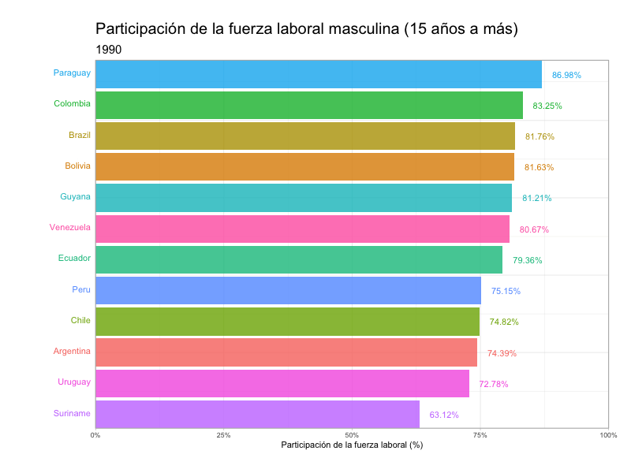

![]()

En este post exploraré la participación laboral de hombres y mujeres en América del Sur entre 1990 a 2021. Para esto, he utilizado la base de datos “Labour Force Participation Rate” del Programa de las Naciones unidas para el Desarrollo (PNUD) la cual puedes encontrar aquí. Esta base de datos considera la fuerza laboral desde los 15 años en adelante.
Participación laboral masculina en América del Sur
A continuación, podemos observar que, durante la primera década del 2000, Perú se mantiene como uno de los primeros en la tabla con alrededor del 85% de participación de la fuerza laboral masculina. Países como Surinam y Guyana se mantienen por debajo del 75% a partir del 2000. Cabe señalar que, uno de los países con mayor decenso a través de los años fue Venezuela, que pasó de contar con una participación laboral masculina del 81% en 1990 al 68% en 2021.
Participación laboral femenina en América del Sur
Por otro lado, podemos observar en el caso de las mujeres, que la participación laboral no suele exceder del 70%. Excepcionalmente, Perú alcanzó un 73% en 2010. Asimismo, destaca el caso de Bolivia que se mantuvo a la cabecera en la década del 90 con aproximadamente 59% de participación laboral femenina y que hacia 2021 finalizó con el 69% de participación. En cambio, Chile mantuvo valores entre 30%-50% entre 1990 y 2021.

Conclusión
Finalmente, podemos concluir que si bien la participación laboral masculina es mayor que la femenina, se pudo observar un mayor dinamismo en el aumento de la participación femenina entre 1990 y 2021 en el que algunos países, como Perú, aumentaron en 30% aprox. la participación durante este periodo.
Cómo citar
BibTeX
@online{sotelo2024,
author = {Sotelo, Santiago},
title = {Participación de la fuerza laboral por país},
date = {2024-03-25},
url = {https://santiagosotelo.com//posts/2024-03-24 labor dynamics/es},
langid = {es}
}
Por favor, cita este trabajo como:
Sotelo, Santiago. 2024. “Participación de la fuerza laboral por
país.” March 25, 2024. https://santiagosotelo.com//posts/2024-03-24
labor dynamics/es.